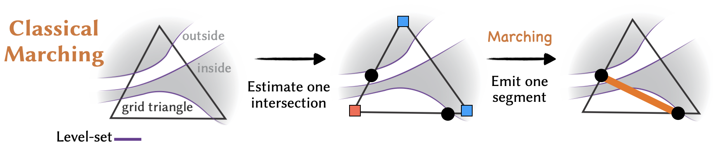
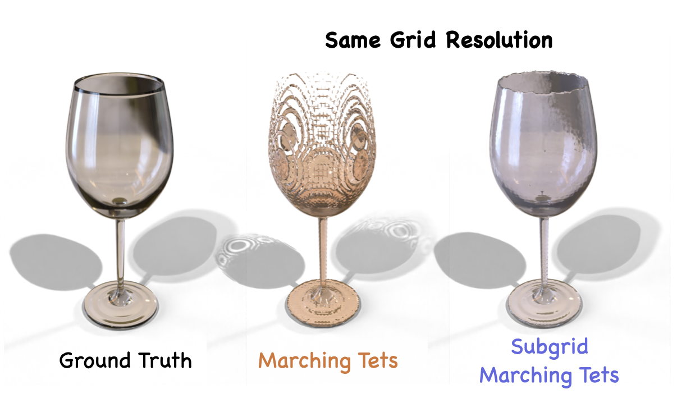
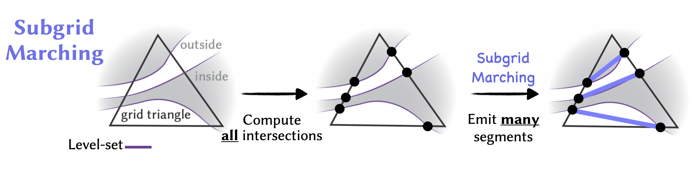
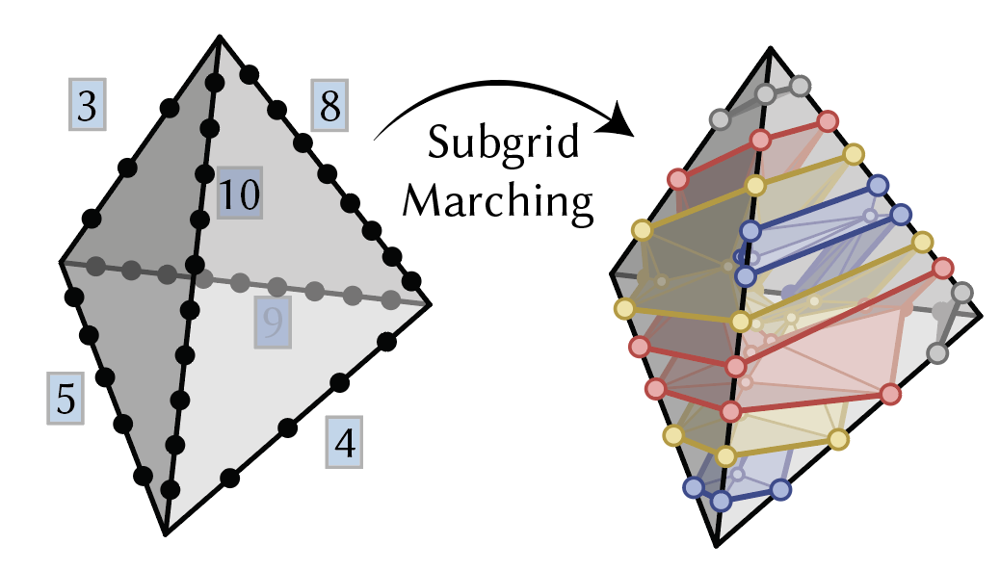
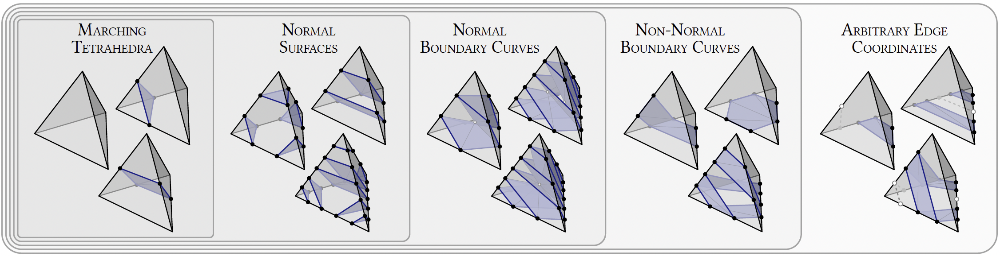
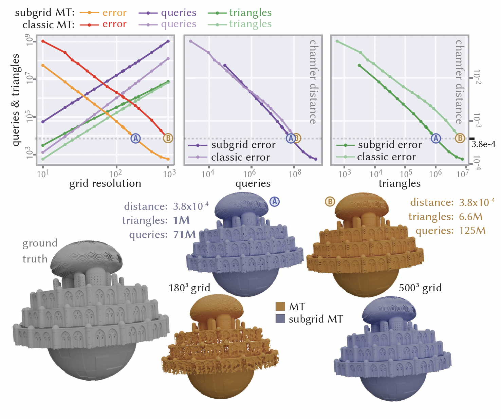

Subgrid Marching Tetrahedra
ACM Transactions on Graphics (SIGGRAPH 2026)

Paper
Supplementary
Recordings
Interactive Demo
Code
Abstract
We describe a method for recovering a manifold, intersection-free triangle mesh from the points where edges of a tetrahedral grid pierce a continuous surface. Unlike classic marching cubes or tets, our subgrid marching scheme allows arbitrarily many surface patches within a single cell, capturing fine features and thin sheets. Moreover, it requires neither a well-defined in- side/outside (allowing surfaces with boundary), nor consistently-oriented input geometry. Yet we retain the local, parallel nature of classic marching: reconstruction is performed independently per tet, yielding a conforming mesh across tet boundaries. Our key innovation is a generalization of normal coordinates from geometric topology, which encode surface connectivity via arbitrary integer intersection counts along each grid edge. This encoding sidesteps the usual Nyquist–Shannon limit, putting no lower bound on the size of features that can be resolved on a fixed grid. In practice, for similar compute time and equal grid resolution—or even an equal number of output triangles—meshes produced by subgrid marching are far more accurate than those from classic marching. Beyond standard contouring, our method can be used to convert polygon soup into a manifold, intersection-free mesh.
How it works
We generalize the well-known marching tetrahedra algorithm to produce meshes with details finer than the grid resolution. The classical marching cubes/tets algorithm takes scalar function values at the vertices of a tetrahedral grid, and produces a triangle mesh that approximates the zero level set of that function. The big limiting assumption is that each edge of the tet/cube can intersect the output surface at most once, and each tet/cube can produce at most one patch (single quad/triangle). So any features smaller than a single tet/cube are lost.


The usual solution in classical marching is to refine the grid, but the thinner a feature is, the more refinement we need. Our method, unlike the classical approach, takes an arbitrary number of intersections on each edge, and builds a mesh out of them, no matter how close the intersections are to each other. So capturing thin features, no matter how thin they are, is now possible without refining the grid.

How do we connect the intersection points?

Given just a bunch of intersection points on the edges of a tetrahedron, it's not immediately clear how to connect them into a valid mesh. We use a prior for connectivity, which we call the normality prior. This is inspired by normal surface theory, which encodes a surface's topology via integer intersection counts along each grid edge. The 2D version of this problem has already found its way to a lot of cool problems in graphics — see Mark Gillespie's and Nick Sharp's theses and papers on intrinsic triangulations.
Our 3D construction uses the 2D approach as a foundation. We also go beyond normal surfaces and identify all classes of surfaces enumerated by the intersection counts. We provide a construction for each class, and provide a manifold and intersection-free guarantee for our output. Play around with all the different types in our interactive demo!

What are the benefits of subgrid marching?
Subgrid marching enjoys all the same benefits of classical marching: the construction is local, efficient, and embarrassingly parallel, while guaranteeing global manifold and intersection-free properties.
Beyond recovering thin features, our method also provides a natural simplification of the output mesh. For almost any example, it gets better reconstruction quality than classical marching at a lower resolution, while producing far fewer output triangles.

Future directions
In the paper, we only work with triangle soups and analytical SDFs, but our method can be applied to any input, as long as you can do ray-intersection queries on that input. If there is some representation out there that allows you to do ray-intersection queries, try subgrid marching on it! Turning a triangle soup into a manifold mesh is a good example of this. The usual approach is to extract an SDF or generalized winding number and convert that into a mesh using classical marching. But that is not necessary anymore -- ray-intersection queries are much easier and cheaper and subgrid marching can work with them.
Subgrid marching, just like classical marching, makes the assumption that the surface is locally flat inside each tetrahedron; this is what we call the normality prior. And just like classical marching, this assumption becomes true as the grid is refined. We simply get to the correct topology faster — at a lower resolution. It could be possible to use other priors, or use more information about the input, to get the correct topology at an even lower resolution.
BibTeX
@article{Baktash:2026:SMT,
author = {Baktash, Hossein and Gillespie, Mark and Crane, Keenan},
title = {Subgrid Marching Tetrahedra},
journal = {ACM Trans. Graph.},
issue_date = {July 2026},
volume = {45},
number = {4},
articleno = {57},
numpages = {20},
year = {2026},
publisher = {Association for Computing Machinery},
address = {New York, NY, USA},
doi = {10.1145/3811358},
url = {https://doi.org/10.1145/3811358}
}
Acknowledgments
This work was funded by the National Science Foundation under awards 2212290 and 2504890. The authors wish to thank Dave Bachman, Saul Schleimer, and Eric Sedgwick for helpful conversations. The soap film image in Figure 5 of the paper was generated by Nano Banana Pro [Google 2025], conditioned on a render of a discrete minimal surface. The marble track model in Figure 18 is designed by Tulio Laanen, and the vase model in Figure 28 by Hiroaki Nishimura.